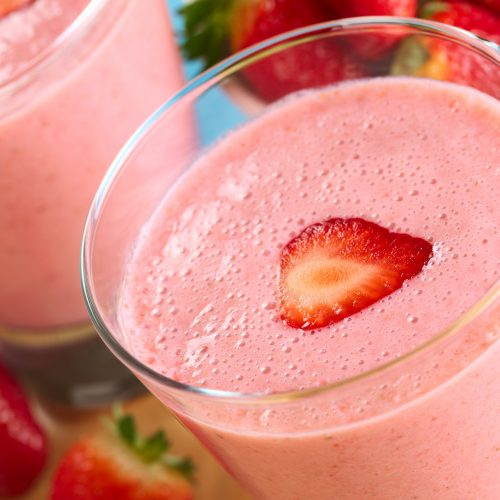

Batida Cachaca Cocktail

Batida is a Brazilian Portuguese word that literally means beaten, and Batidas are a summertime favorite in Brazil.
The Strawberry Batida is a pink colored frozen drink made from Leblon cachaca, condensed milk,
strawberries and sugar, and served in a chilled highball glass.
It has a consistency that's somewhere between a milkshake and a slushie.
Ingredients
- 1 1/2 oz. (45ml) cachaca
- 1 oz. (30ml) Condensed Milk
- 1 1/2 Cup Frozen Strawberries
- 1 cup ice cubes
Steps
- Combine cachaça, condensed milk, and frozen strawberries (or fresh strawberries and ice) in a blender and pulse until smooth
- Pour the mix into a serving glass
Return to main page